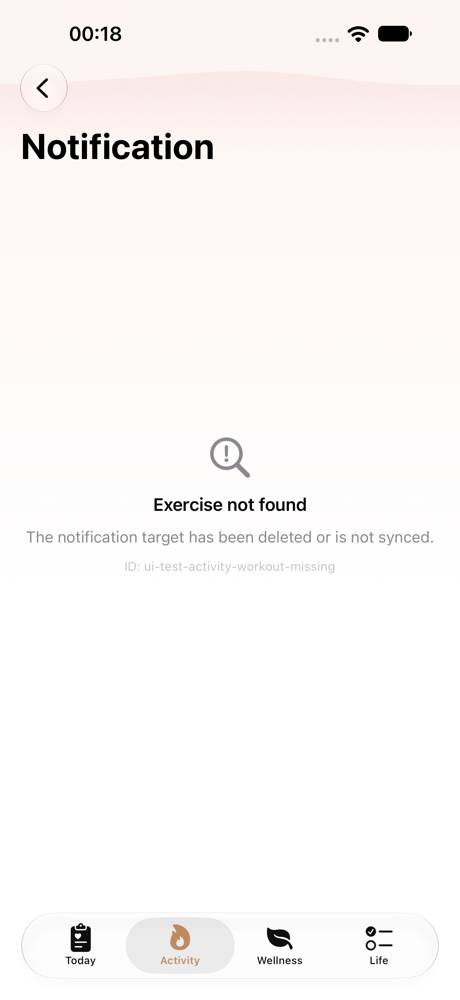
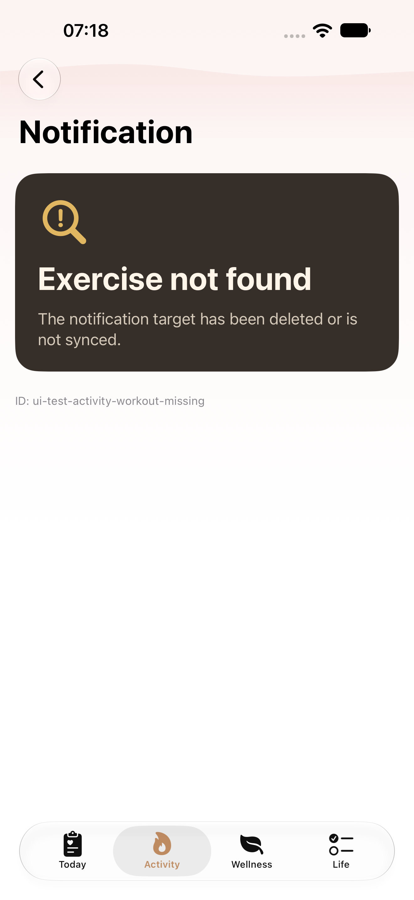
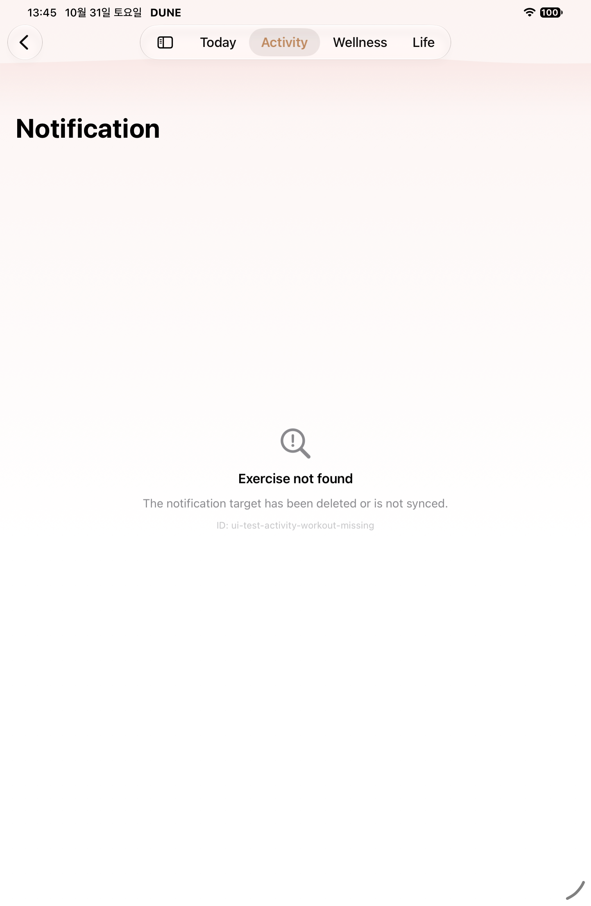
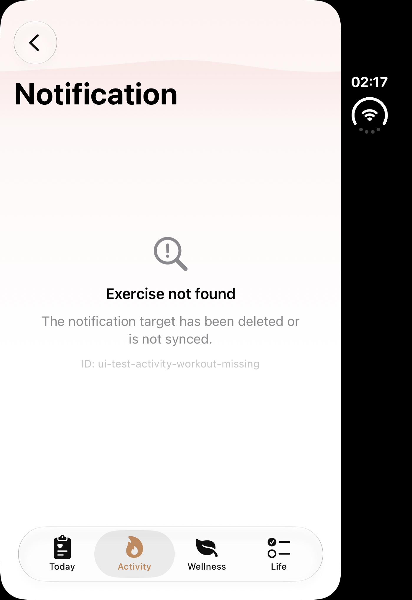
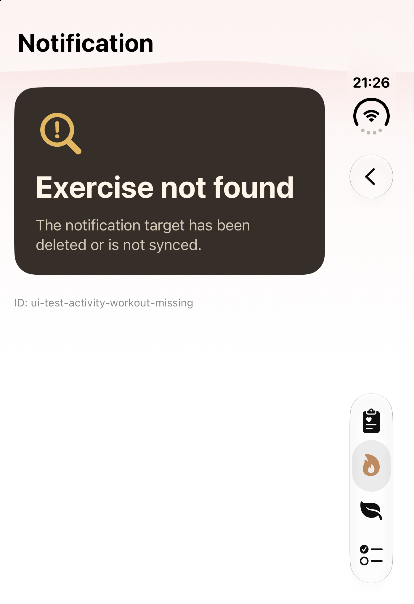
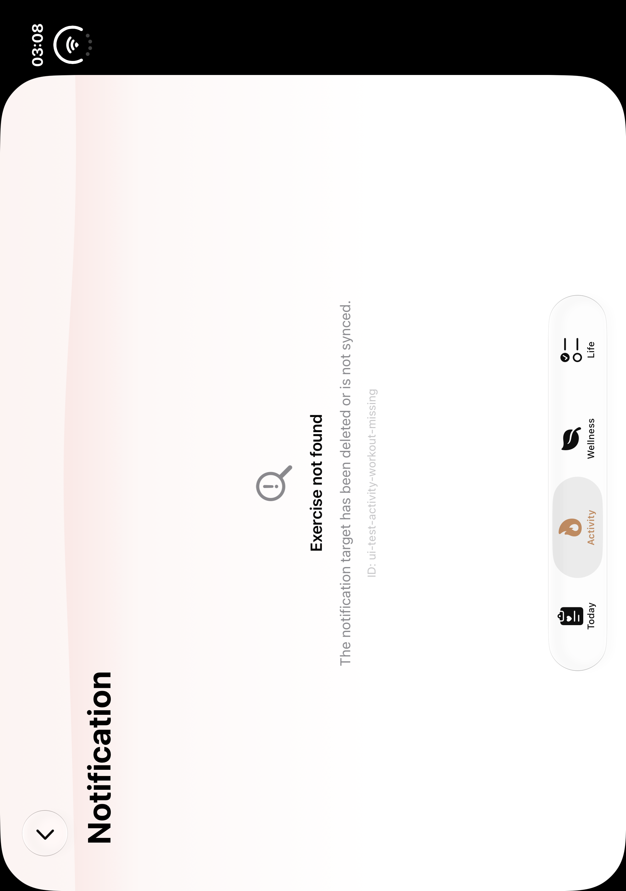
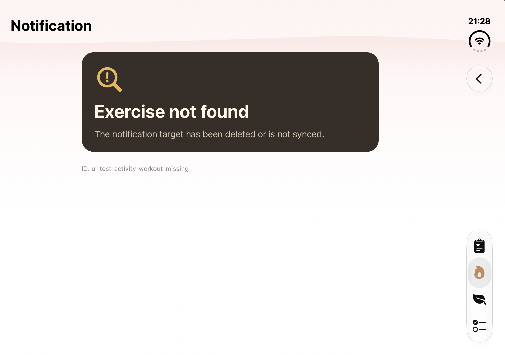
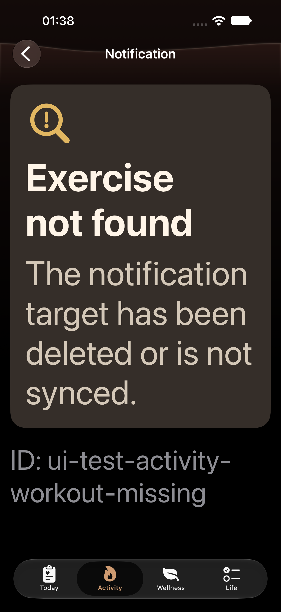
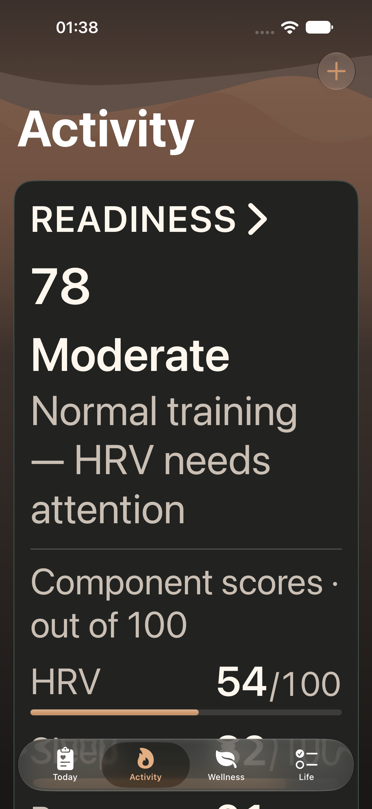
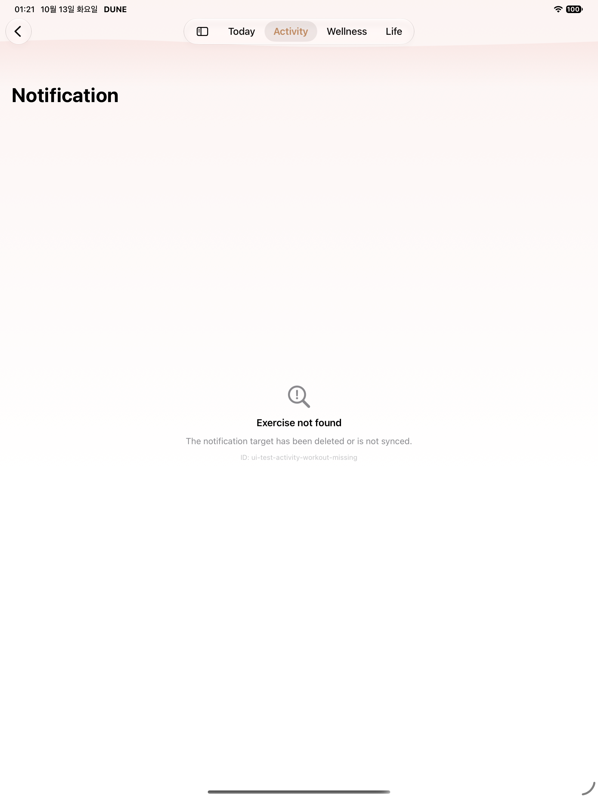

Publication state: T14_INSTALLED_FOUR_ROWS — installed=true.
T14 · 운동 알림 대상 없음
네 기기 normal 전후와 수정된 Phone MAX Back 검증 자료입니다. 독립 native 품질 검토와 관련 소스 일치를 확인했으며 정식 맵 T14 네 행에 반영했습니다.
Phone MAX 90709: 1/1 PASS실제 Back 후 fallback 사라짐과 Activity 전면 유지 및 3초 관찰을 확인했습니다. 이전 실패들은 보존하며 원인은 단정하지 않습니다. normal 기기 자료는 Back을 검사하지 않습니다.
일반 iPhone
일반 iPhone · 기존
소스 이미지별 정확한 소스 미확인 · 2026-10-13T00:18:56.578000+09:00
1320×2868 · SHA256 848f3776bff0b0ba679acaf477ab249ff3aa53541dfe3dafabf2f1b2b5c933ae
historical-capture-index timestamp; exact original attachment not relinked일반 iPhone · normal 개편
소스 d3109533 · 2026-10-31T07:18:10.027000+09:00
1320×2868 · SHA256 7a3582432358ffa9c23d4a186e2858757b3f2311fc87bd5b3f432c98663980b2
native-XCTest-attachment 기존 정식 맵의 오래된 원본과 10월31일 d310 normal 개별 PASS입니다. 그 그룹 전체는 FAILED2/1/1이며 현재 새 Phone 통과가 아닙니다.
iPad
iPad · 기존
소스 1f7f9900 · 2026-10-31T13:45:43.059000+09:00
1512×2316 · SHA256 2a37e07f66204c74db5fcf8551b73a03c43b82ea599b729fad310e0645b2fc01
native-XCTest-attachmentiPad · normal 개편 소스 3fac15d4 · 2026-11-02T21:14:41.600000+09:00
소스 3fac15d4 · 2026-11-02T21:14:41.600000+09:00
2064×2752 · SHA256 09b16ed775f20eda9b4806e2bff1df2a47ed50a45b17482170cd89b7a5d59a8f
native-XCTest-attachment 기존 mini의 F291은 전체 FAILED6/5/1 중 T14 해당 case만 Passed입니다. 이후 Pro13 normal1/1PASS와 모델·기기·날짜·viewport가 다릅니다.
Duo 접힘
Duo 접힘 · 기존
소스 이미지별 정확한 소스 미확인 · 2026-10-13T02:17:23.461000+09:00
1398×2034 · SHA256 22838fddb61dc415e253df04d0a213e3da89ccdc01278dc4476c093a9c4475c9
historical-capture-index timestamp; exact original attachment not relinkedDuo 접힘 · normal 개편
소스 3fac15d4 · 2026-11-02T21:26:00.327382+09:00
1398×2034 · SHA256 a683a201ba70ba62238814f631b1f0feca76910efabe7e810bb58680b21a8ef5
host-file-mtime of paired native PNG; not XCTest attachment timestamp or checkpoint deadline 새 normal1/1PASS · 전후0° 활성LCD · 유효 strictACK6개. 선택한005는 정확한 missing-workout 상세입니다. parent 육안 CLEAR 관측은 raw pending-parent와 구분합니다.
Duo 펼침
Duo 펼침 · 기존
소스 이미지별 정확한 소스 미확인 · 2026-10-13T03:08:29.223000+09:00
2006×2852 · SHA256 dd3823e83cc1fb65613034d70440041b3bd1990b04a6f8ec1c10c02835b91720
historical-capture-index timestamp; exact original attachment not relinkedDuo 펼침 · normal 개편
소스3fac15d4 · 2026-11-02T21:28:12.814535+09:00
실제2853×2007 EXIF1 · 원래 파일명005-2007x2853
SHA256 977a66abf01d63afd102dda4e1a765dcb8905165657ab8cca15b4207049ab06d
host-file-mtime of paired native PNG; not XCTest attachment timestamp or checkpoint deadline 진단 전용 · 실제 실패 MAX
이 이미지는 전체 ID가 보인 실제 실패 시점입니다. 통과 증거·수정 helper 실행·Back 결과로 쓰지 않습니다.
Phone MAX · FAILED1 진단 전용소스 3fac15d4 · 2026-11-02T21:09:13.560000+09:00
1320×2868 · SHA256 1b773a043e45906edbda079bc7f4ccbbfe6837dde66768568221b14213112099
native-XCTest-attachment수정 Phone MAX · 실제 Back
90709 정확한 1/1 PASS. 상세 ID 캡처와 Back 후 Activity 보충이며 기존 normal 비교 행과 구분합니다.


출처와 미완료 범위
원본 출처·정확한 결과·해시 · 세 관점 실제 이미지 검토 · 소스 검토·P3 유지보수 보류 · ID geometry 수정 소스 검토
네 normal 기기 자료를 연결했습니다. 새 Duo 두 자세는 각각1/1PASS·6ACK·0°LCD/180°LCD-1이며 실제 원본을 확인했습니다. 수정 MAX와 범위별 품질 검토 및 소스 확인은 완료했으며 정식 맵 T14 네 행에 반영했습니다. 전체 UI·단위·Watch·새 CI 통과를 주장하지 않습니다.
네 기기 옛 정식 맵 원본 보존
일반 iPhone · 옛 정식 맵 원본소스 이미지별 정확한 소스 미확인 · 2026-10-13T00:18:56.578000+09:00
1320×2868 · SHA256 848f3776bff0b0ba679acaf477ab249ff3aa53541dfe3dafabf2f1b2b5c933ae
historical-capture-index timestamp; exact original attachment not relinkediPad · 옛 정식 맵 원본
소스 이미지별 정확한 소스 미확인 · 2026-10-13T01:21:14.436000+09:00
2064×2752 · SHA256 42386d976f4fbff9c76322016a77b36139b54aac222b7fe77bf3651106663e23
historical-capture-index timestamp; exact original attachment not relinkedDuo 접힘 · 옛 정식 맵 원본소스 이미지별 정확한 소스 미확인 · 2026-10-13T02:17:23.461000+09:00
1398×2034 · SHA256 22838fddb61dc415e253df04d0a213e3da89ccdc01278dc4476c093a9c4475c9
historical-capture-index timestamp; exact original attachment not relinkedDuo 펼침 · 옛 정식 맵 원본소스 이미지별 정확한 소스 미확인 · 2026-10-13T03:08:29.223000+09:00
2006×2852 · SHA256 dd3823e83cc1fb65613034d70440041b3bd1990b04a6f8ec1c10c02835b91720
historical-capture-index timestamp; exact original attachment not relinked